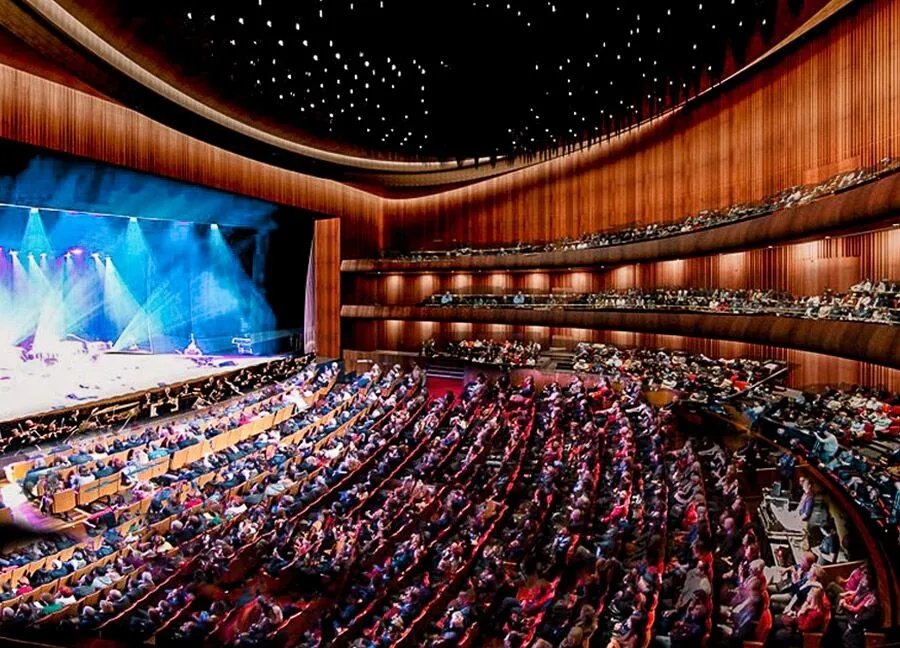
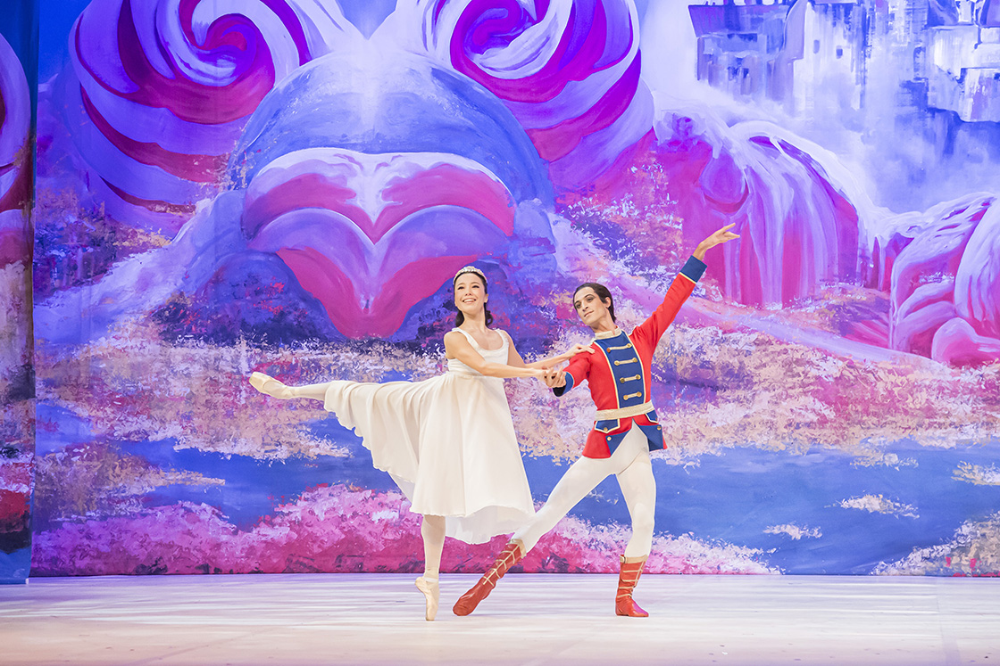
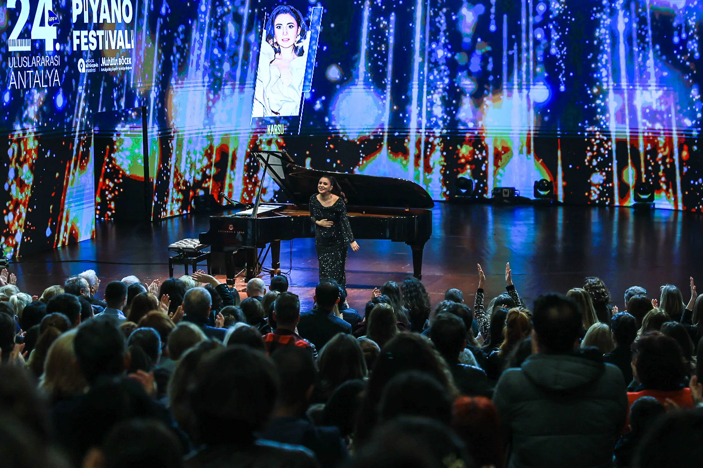
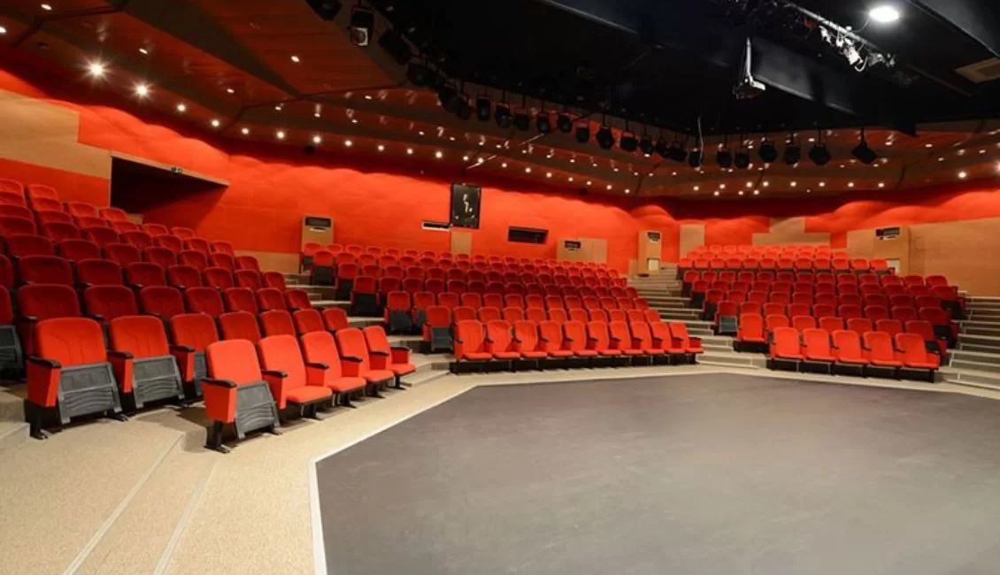
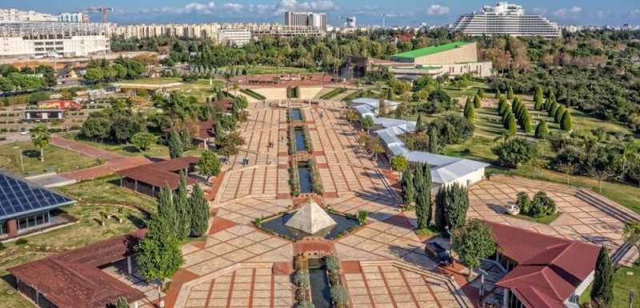

Tiyatro, konser, opera ve sergilerin düzenlendiği Antalya’nın en büyük kültür merkezi. Sanat dolu akşamlar için ideal.
Adres: Meltem Mah., Muratpaşa/Antalya
Etkinlikler: Yıl boyu tiyatro, konser, sergi
Giriş: Etkinliğe göre değişir

Sanatseverler için klasik müzik, bale ve opera temsillerini barındıran büyüleyici bir sahne deneyimi sunar.
Adres: Haşim İşcan Kültür Merkezi, Muratpaşa/Antalya
Sezon: Ekim – Haziran
Giriş: Biletli

Yerli ve yabancı sanatçıların sahne aldığı, klasik ve caz müzik ağırlıklı festival her yıl Antalya’yı müzikle buluşturur.
Yer: Antalya genelinde çeşitli sahneler
Dönem: Her yıl Eylül – Ekim arası
Giriş: Etkinliğe göre değişir

Antalya Şehir Tiyatrosu’nun sahnelediği oyunlarla dolup taşan bu salon, yerel tiyatroya can verir.
Adres: Kepez Belediyesi Turgut Özal Spor Kompleksi, Kepez/Antalya
Program: Haftalık oyun takvimi
Giriş: Ücretli (Biletli giriş)

Doğayla iç içe festival, konser ve gösterilerin yapıldığı park alanı. Yaz akşamlarında açık hava konserleri çok popülerdir.
Adres: Konyaaltı Cad., Muratpaşa/Antalya
Etkinlikler: Bahar ve yaz aylarında konserler
Giriş: Etkinliğe göre değişir